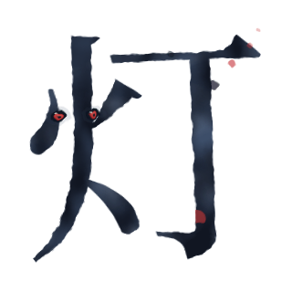
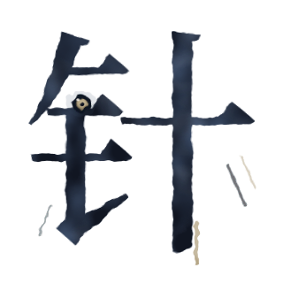
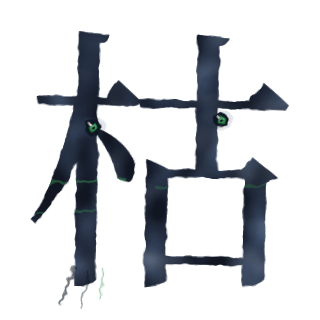
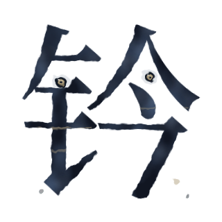

字怪形象 · 补齐的十一只
分层水墨 · 512×512 · body / face / wisp字形由 Noto Serif SC 供给（glyph_refs.py 出底稿），墨的浓淡、边缘毛糙与飞白全部由 SVG 滤镜生成，一笔没改字形 —— 「一眼认出是哪个字，再看出它是活物」。属性色只落在眼睛与要害，占比不超过两成。补齐后 enemies.json 的 25 只杂兵全部有立绘，战斗与图鉴里不再有回落到字牌格的怪。
旧欠账 · 四只
实装已久却从没进过形象表，2026-09-03 补齐
火
灯花
灯
血 / 攻 120 / 30
前排近战
灼身:每次攻击给你挂 1 层灼烧
火旁那两点就是眼睛;钩尖爆开一朵灯花，火星斜着飞出去 —— 那是落在你身上的那 1 层。
水
墨溅
溅
血 / 攻 100 / 30
后排远程
无能力，站后排
三点水化成将被弹开的墨；右下一串墨点逐粒变小 —— 前排拦不住的就是这串。

金
悬针
针
血 / 攻 90 / 45
后排远程 · 锁人
无能力，全表最脆
悬针竖出锋垂下、伸出字外；独眼 —— 它只认一个目标，第二只眼是多余的。
火
败笔
败
血 / 攻 150 / 55
前排近战 · 锁人
无能力，攻击全段最高
两眼不同高 —— 写坏的字连五官都没对齐；捺脚溃开，墨甩到字外。
低阶护甲 · 四只
字林 6 层起 · 护甲 18–22 · 五行低阶位
木
枯笔
枯
血 / 攻 150 / 30
护甲 18
前排近战
低阶护甲 · 木
飞白最多的一只：苔绿干笔横刮过墨面。甲不画壳，靠干硬的木质说服人。
火
火漆
漆
血 / 攻 140 / 35
护甲 18
前排近战
低阶护甲 · 火
字脚下凝住一滩朱砂漆，边缘钝圆 —— 它是冷凝出来的，不是洇出来的。
土
砚台
砚
血 / 攻 200 / 22
护甲 22
前排近战
低阶护甲 · 土，攻击全表最低
眼深陷、木然；石旁凹处存着一汪墨，那是砚池。它只是杵在那里。

金
铜钤
钤
血 / 攻 130 / 40
护甲 20
前排近战
低阶护甲 · 金
笔画方正像铸出来的；印面留着没磨掉的范线。印章端正，它的怪也端正。
高阶护甲 · 三只
文山 26 层起 · 护甲 42–45 · 五行高阶位
木
版牍
牍
血 / 攻 260 / 40
护甲 45
前排近战
高阶护甲 · 木，血量全表第二厚
三条木纹横贯整只、上密下疏 —— 一层层压着的简；眼藏在版缝里。
 火
火
窑变
窑
血 / 攻 220 / 50
护甲 42
前排近战
高阶护甲 · 火
釉面开片，裂缝里透火；眼在窑口之下 —— 从窑里看出来的两点火。
水
宿墨
宿
血 / 攻 240 / 38
护甲 45
前排近战
高阶护甲 · 水
结壳的龟裂把墨面分成一片一片；壳下渗出两滴稠墨 —— 与墨渍的「洇」相反。